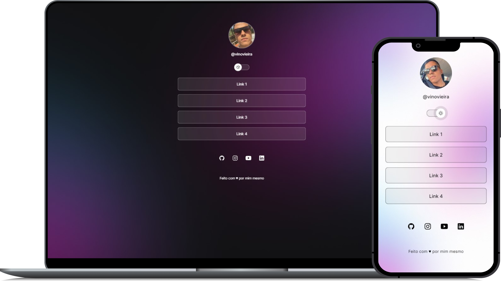
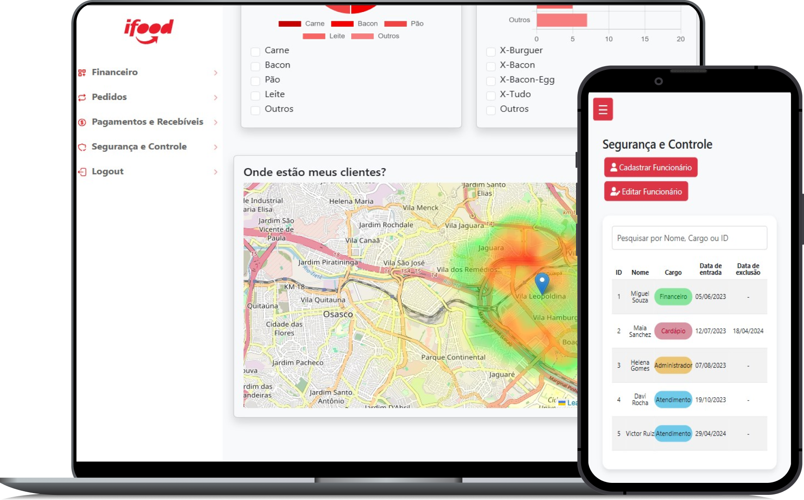

Projetos
BookStore

Projeto básico de layout de uma loja de livros desenvolvido para praticar conceitos fundamentais de desenvolvimento web front-end.
html
•
css
•
javascript
DevLinks
O DevLinks é um projeto totalmente funcional, com intuito de servir como agregador de links para usar como cartão de visitas online.
html
•
css
•
javascript
Financial Backoffice iFood
Esta é uma aplicação financeira desenvolvida como parte do desafio do iFood. O objetivo do projeto é criar uma interface amigável que possibilite o gerenciamento de receitas e despesas utilizando tecnologias modernas da web.
html
•
css
•
javascript
•
bootstrap
 GitHub
GitHub Online
Online